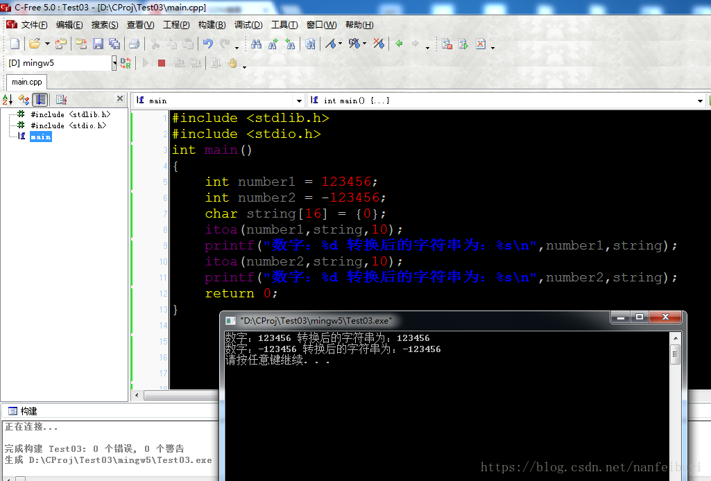
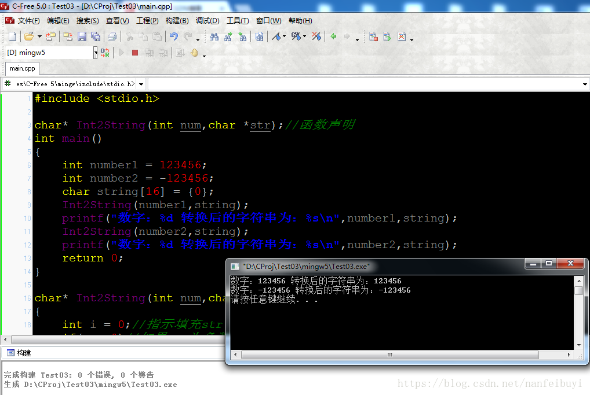
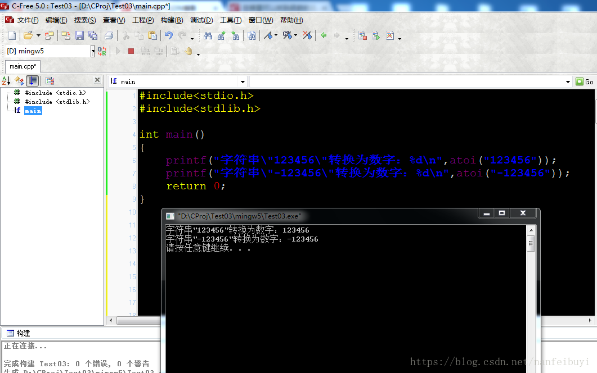
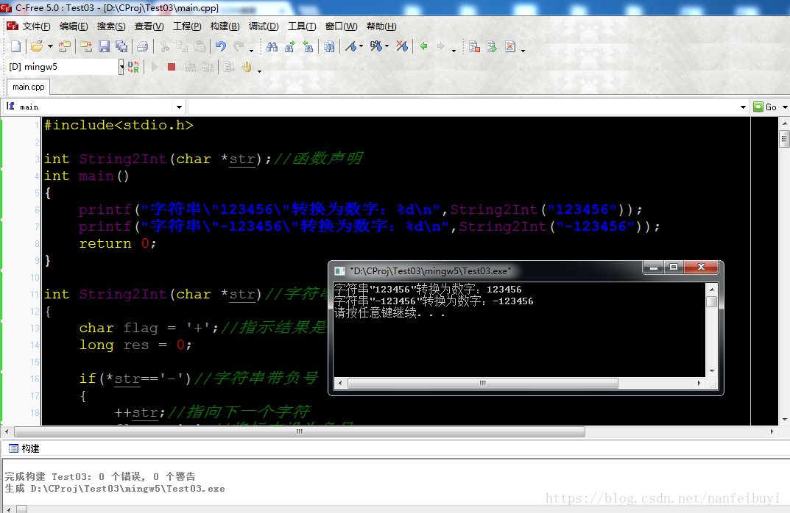
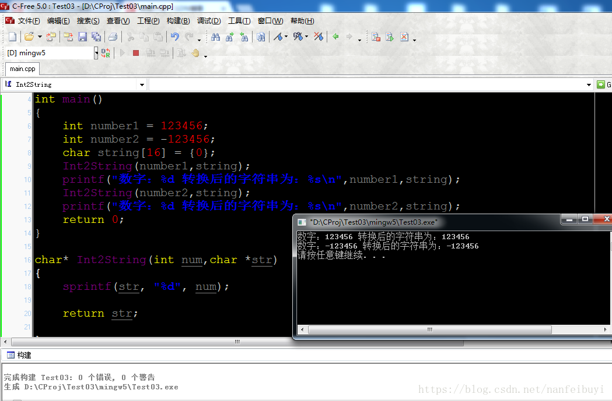
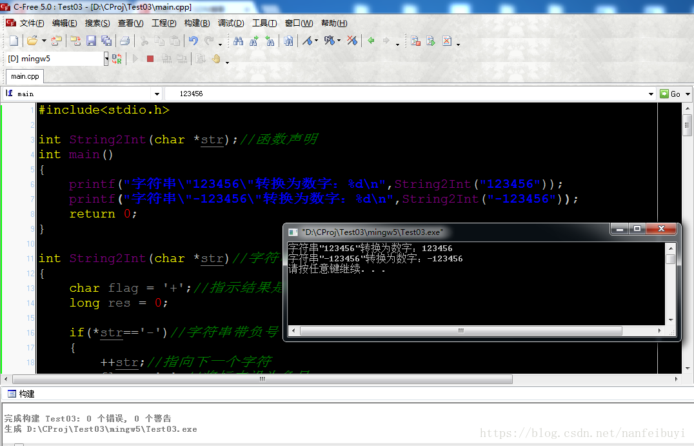
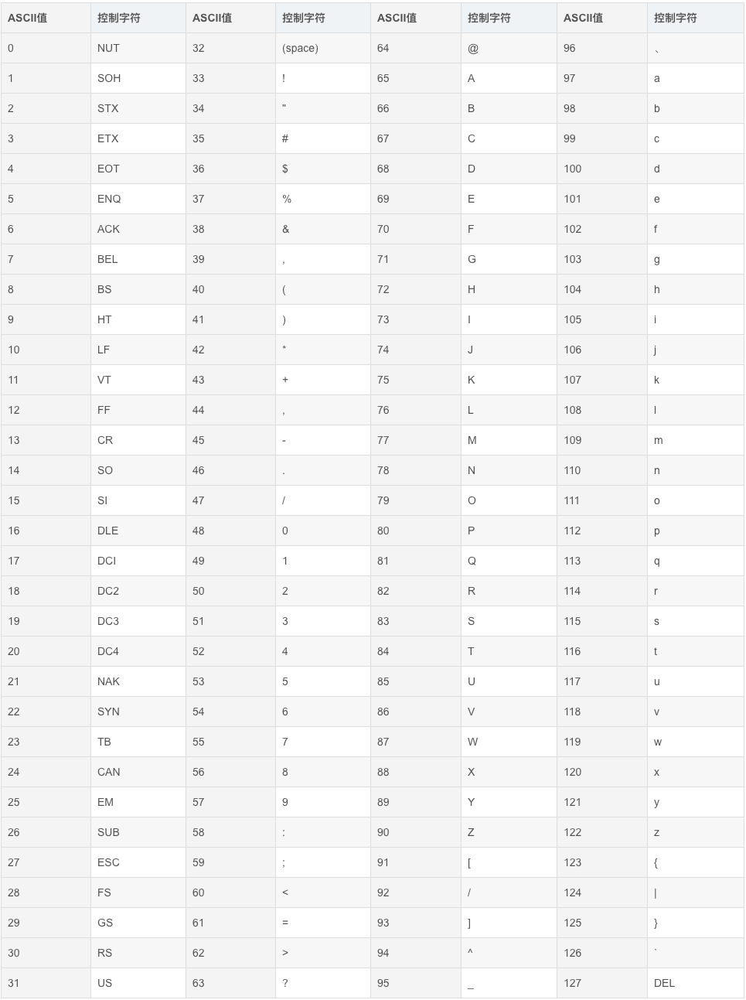

一、概要
C言語における整数と文字列の相互変換には、広く応用されている拡張関数(非標準ライブラリ)があります。また、自分で簡単な実装を試すこともできます。
二、整数から文字列への変換
1、拡張関数 itoa
itoa (integer to alphanumeric を表す)は、整数型の数値を文字列に変換する関数です。
Windows 環境では、<stdlib.h> ヘッダーファイル内にあります:
char* itoa(int value,char*string,int radix);//value: 要转换的整数，string: 转换后的字符串,radix: 转换进制数，如2,8,10,16 进制等。
関数のソースコード：
char* itoa(int num,char* str,int radix)
{
char index[]="0123456789ABCDEFGHIJKLMNOPQRSTUVWXYZ";//インデックステーブル
unsigned unum;//変換する整数の絶対値を格納する。変換する整数は負数の可能性がある
int i=0,j,k;//iは文字列の該当位置を設定するために使用する。変換後、iは実際には文字列の長さとなる。変換後は順序が逆順になる。正負がある場合、kは順序調整の開始位置を示すために使用し、jは順序調整時の交換を示すために使用する。
//変換する整数の絶対値を取得する
if(radix==10&&num<0)//10進数に変換する必要があり、かつ負数である場合
{
unum=(unsigned)-num;//numの絶対値をunumに代入する
str[i++]='-';//文字列の先頭に'-'記号を設定し、インデックスを1加算する
}
else unum=(unsigned)num;//numが正の場合は、直接unumに代入する
//変換部分、変換後は逆順になることに注意
do
{
str[i++]=index[unum%(unsigned)radix];//unumの最後の1桁を取得し、strの対応する位置に設定し、インデックスを1加算する
unum/=radix;//unumの最後の1桁を削除する
}while(unum);//unumが0になるまでループを続ける
str[i]='\0';//文字列の最後に'\0'文字を追加する。C言語の文字列は'\0'で終了する。
//順序を元に戻す
if(str[0]=='-') k=1;//負数の場合、符号は調整する必要がないため、符号の後ろから調整を開始する
else k=0;//負数でない場合、すべて調整する必要がある
char temp;//一時変数、2つの値を交換するときに使用する
for(j=k;j<=(i-1)/2;j++)//先頭と末尾を1対1で対称に交換する。iは実際には文字列の長さであり、インデックスの最大値は長さより1少ない
{
temp=str[j];//先頭の値を一時変数に代入する
str[j]=str[i-1+k-j];//末尾の値を先頭に代入する
str[i-1+k-j]=temp;//一時変数の値(実際には以前の先頭の値)を末尾に代入する
}
return str;//変換後の文字列を返す
}
サンプルプログラム：
例
#include <stdlib.h>
#include <stdio.h>
int main()
{
int number1 = 123456;
int number2 = -123456;
char string[16] = {0};
itoa(number1,string,10);
printf("数値：%d 変換後の文字列：%s\n",number1,string);
itoa(number2,string,10);
printf("数値：%d 変換後の文字列：%s\n",number2,string);
return 0;
}
実行結果のスクリーンショット：

2、自分で簡単に実装する
実装コード：
例
#include <stdio.h>
char* Int2String(int num,char *str);//関数宣言
int main()
{
int number1 = 123456;
int number2 = -123456;
char string[16] = {0};
Int2String(number1,string);
printf("数値：%d 変換後の文字列：%s\n",number1,string);
Int2String(number2,string);
printf("数値：%d 変換後の文字列：%s\n",number2,string);
return 0;
}
char* Int2String(int num,char *str)//10進数
{
int i = 0;//strへの代入位置を示す
if(num<0)//numが負数の場合、numを正にする
{
num = -num;
str[i++] = '-';
}
//変換
do
{
str[i++] = num%10+48;//numの最下位桁を取得する。文字0~9のASCIIコードは48~57。簡単に言うと、数字0+48=48で、ASCIIコードは文字'0'に対応する
num /= 10;//最下位桁を削除する
}while(num);//numが0でなければループを続ける
str[i] = '\0';
//調整を開始する位置を決定する
int j = 0;
if(str[0]=='-')//負号がある場合、負号は調整する必要がない
{
j = 1;//2桁目から調整を開始する
++i;//負号があるため、交換の対称軸も1桁後ろに移動する
}
//対称交換
for(;j<i/2;j++)
{
//対称に両端の値を交換する。実際には中間変数を省略してa+bの値を交換する方法：a=a+b;b=a-b;a=a-b;
str[j] = str[j] + str[i-1-j];
str[i-1-j] = str[j] - str[i-1-j];
str[j] = str[j] - str[i-1-j];
}
return str;//変換後の値を返す
}
実行結果のスクリーンショット：

三、文字列から整数への変換
1、拡張関数
atoi (alphanumeric to integer を表す)は、文字列を整数型の数値に変換する関数です。
Windows 環境では、<stdlib.h> ヘッダーファイル内にあります。
int atoi(const char *nptr);//文字列を整数に変換する関数、nptr: 変換する文字列
関数のソースコード
int atoi(const char *nptr)
{
return (int)atol(nptr);
}
long atol(const char *nptr)
{
int c; /*現在変換する文字(1文字ずつ数字に変換する)*/
long total; /*現在の変換結果*/
int sign; /*変換結果に負号が付くかどうかのフラグ*/
/*スペースをスキップする。スペースは変換しない*/
while ( isspace((int)(unsigned char)*nptr) )
++nptr;
c = (int)(unsigned char)*nptr++;//変換用に1文字取得する
sign = c; /*符号のフラグを保存する*/
if (c == '-' || c == '+')
c = (int)(unsigned char)*nptr++; /*'+'、'-'記号をスキップし、変換しない*/
total = 0;//変換結果を0に設定する
while (isdigit(c)) {//文字が数字の場合
total = 10 * total + (c - '0'); /*ASCIIコードに基づいて文字を対応する数字に変換し、10を掛けて結果に累積する*/
c = (int)(unsigned char)*nptr++; /*次の文字を取得する*/
}
//符号のフラグに基づいて、負号が付くかどうかの結果を返す
if (sign == '-')
return -total;
else
return total;
}
サンプルプログラム：
例
#include<stdio.h>
#include<stdlib.h>
int main()
{
printf("文字列\"123456\"変換後の数値：%d\n",atoi("123456"));
printf("文字列\"-123456\"変換後の数値：%d\n",atoi("-123456"));
return 0;
}

2、自分で簡単に実装する
実装ソースコード：
例
#include<stdio.h>
int String2Int(char *str);//関数宣言
int main()
{
printf("文字列\"123456\"変換後の数値：%d\n",String2Int("123456"));
printf("文字列\"-123456\"変換後の数値：%d\n",String2Int("-123456"));
return 0;
}
int String2Int(char *str)//文字列を数値に変換する
{
char flag = '+';//結果に符号が付くかどうかを示す
long res = 0;
if(*str=='-')//文字列に負号が付いている
{
++str;//次の文字を指す
flag = '-';//フラグを負号に設定する
}
//1文字ずつ変換し、結果resに累積する
while(*str>=48 && *str<=57)//数字の場合のみ変換する。数字0~9のASCIIコード：48~57
{
res = 10*res+ *str++-48;//文字'0'のASCIIコードは48で、48-48=0となり、ちょうど数字0に変換される
}
if(flag == '-')//負数の場合を処理する
{
res = -res;
}
return (int)res;
}
スクリーンショット：

四、sprintf() 関数と sscanf() 関数を利用する
整数から文字列への変換
テストコード：
例
#include <stdio.h>
char* Int2String(int num,char *str);//関数宣言
int main()
{
int number1 = 123456;
int number2 = -123456;
char string[16] = {0};
Int2String(number1,string);
printf("数値：%d 変換後の文字列：%s\n",number1,string);
Int2String(number2,string);
printf("数値：%d 変換後の文字列：%s\n",number2,string);
return 0;
}
char* Int2String(int num,char *str)
{
sprintf(str, "%d", num);
return str;
}
実行結果：

文字列から整数への変換
テストコード：
例
#include<stdio.h>
int String2Int(char *str);//関数宣言
int main()
{
printf("文字列\"123456\"変換後の数値：%d\n",String2Int("123456"));
printf("文字列\"-123456\"変換後の数値：%d\n",String2Int("-123456"));
return 0;
}
int String2Int(char *str)//文字列を数値に変換する
{
char flag = '+';//結果に符号が付くかどうかを示す
long res = 0;
if(*str=='-')//文字列に負号が付いている
{
++str;//次の文字を指す
flag = '-';//フラグを負号に設定する
}
sscanf(str, "%ld", &res);
if(flag == '-')
{
res = -res;
}
return (int)res;
}
実行結果：

五、付録ASCIIコード表(一部)

作者：Genven_Liang
原文：https://blog.csdn.net/nanfeibuyi/article/details/80811498
クリックしてノートを共有
<p style="font-size:14px;">ノートは本記事の内容を拡張したものである必要があります！</p><br> <p style="font-size:12px;"><a href="../tougao.html" target="_blank">記事投稿は、ここをクリックできます</a></p> <p style="font-size:14px;"><a href="./runoob-user-test-intro.html" target="_blank">登録招待コードの取得方法</a></p> <h3 class="text-muted"><i class="fa fa-info-circle" aria-hidden="true"></i> ノートを共有する前に必ず<a href=".." class="runoob-pop">ログイン</a>してください！</h3> <p><a href="./runoob-user-test-intro.html" target="_blank">登録招待コードの取得方法</a></p>